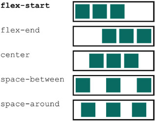

Este capitulo habla sobre:
- flex-containers y flex-items
- Main-axis y cross-axis
- Tamaños de elementos en flexbox
- Alineación de elementos en flexbox
Si ha estado en el mundo de CSS en los últimos años, es casi seguro que haya escuchado a alguien cantar alabanzas a flexbox. Flexbox, formalmente Diseño de caja flexible, es un nuevo método para diseñar elementos en la página. Es más predecible y ofrece un control mucho más específico que los floats. También es una solución simple a los problemas de larga data de centrado vertical y columnas de igual altura.
Flexbox estado en el horizonte durante varios años, y los desarrolladores que solo necesitan admitir navegadores de vanguardia lo han estado usando durante un tiempo. Pero ahora hemos llegado a un punto en el que es compatible con todos los navegadores principales, incluido el soporte parcial en IE10. De hecho, tiene un soporte más amplio que incluso la propiedad border-radius (que no es compatible con Opera Mini). Si ha estado esperando el momento adecuado para aprender flexbox, ese momento ha llegado. Este capítulo lo familiarizará.
Si flexbox tiene una debilidad, es la abrumadora cantidad de opciones que ofrece. Introduce 12 nuevas propiedades para CSS, incluidas algunas propiedades abreviadas. Eso puede ser mucho para asimilar a la vez. Cuando comencé a aprender flexbox, me sentí un poco como beber de una manguera contra incendios, y me costó mucho memorizar todas las nuevas propiedades. Voy a adoptar un enfoque diferente al enseñarles sobre flexbox; lo usaremos con facilidad.
Cubriré algunos principios básicos del diseño de flexbox que necesitará comprender, seguidos de ejemplos prácticos. No es necesario que aprenda las 12 propiedades nuevas para utilizar flexbox. He descubierto que solo unos pocos hacen la mayor parte del trabajo pesado, así que nos centraremos en ellos. El resto de las propiedades ofrecen opciones para alinear y espaciar elementos. Cerca del final del capítulo, los explicaré y proporcionaré una guía de referencia rápida a la que puede volver cuando la necesite.
5.1. PRINCIPIOS DE FLEXBOX
Flexbox comienza con la propiedad de display. Aplicar display: flex a un elemento lo convierte en un flex container, y sus hijos directos se convierten en flex items. De forma predeterminada, los flex items se alinean uno al lado del otro, de izquierda a derecha, todo en una fila. El flex container llena el ancho disponible como un elemento de bloque, pero los flex items pueden no necesariamente llenar el ancho de su flex-container. Los flex-items tienen todos la misma altura, determinada naturalmente por su contenido.
También puede usar display: inline-flex. Esto crea un flex-container que se comporta más como un elemento inline-block que como un block. Fluye en línea con otros elementos inline, pero no crecerá automáticamente al 100% de ancho. Los elementos flex dentro de él generalmente se comportan de la misma manera que con display: flex. Hablando en términos prácticos, no necesitará usar esto con mucha frecuencia.
Flexbox es diferente a los valores de visualización anteriores (inline, inline-block, etc.), que solo afectan a los elementos a los que se aplican. En cambio, un flex container afirma el control sobre el diseño de los elementos que contiene. Un flex container y sus elementos se ilustran en la figura 5.1.

Los elementos se colocan a lo largo de una línea denominada main-axis, que va desde el main-start (izquierda) hasta el main-end (derecha). Perpendicular al main-axis está el cross-axis. Esto va desde el cross-start (arriba) hasta el cross-end (abajo). La dirección de estos ejes se puede cambiar; Le mostraré cómo hacer esto más adelante en el capítulo.
Debido a que el diseño de flexbox se define en términos del main-axis y el cross-axis, usaré los términos start y end en referencia a los ejes, en lugar de izquierda y derecha o superior e inferior.
Estos conceptos (flex-container, flex-items y los dos ejes) cubren mucho de lo que necesita saber sobre flexbox. La aplicación de display: flex te lleva bastante lejos antes de que tengas que elegir cualquiera de esas 12 propiedades nuevas. Para probarlo, creará la página que se muestra en la figura 5.2.
He estructurado esta página para cubrir varias formas de usar flexbox. Usaremos flexbox para el menú de navegación en la parte superior y para diseñar los tres cuadros blancos y el texto estilístico de $20.00 en la parte inferior derecha.
Inicie una nueva página y vincúlela a una nueva hoja de estilo. Luego agregue este marcado a su página.
<!doctype html>
<head>
<title>Flexbox example page</title>
<link href="styles.css" rel="stylesheet"
type="text/css" />
</head>
<body>
<div class="container">
<header>
<h1>Ink</h1>
</header>
<nav>
<ul class="site-nav"> 1
<li><a href="/">Home</a></li> 1
<li><a href="/features">Features</a></li> 1
<li><a href="/pricing">Pricing</a></li> 1
<li><a href="/support">Support</a></li> 1
<li class="nav-right"> 1
<a href="/about">About</a> 1
</li> 1
</ul> 1
</nav>
<main class="flex">
<div class="column-main tile"> 2
<h1>Team collaboration done right</h1> 2
<p>Thousands of teams from all over the 2
world turn to <b>Ink</b> to communicate 2
and get things done.</p> 2
</div> 2
<div class="column-sidebar"> 3
<div class="tile">
<form class="login-form">
<h3>Login</h3>
<p>
<label for="username">Username</label>
<input id="username" type="text"
name="username"/>
</p>
<p>
<label for="password">Password</label>
<input id="password" type="password"
name="password"/>
</p>
<button type="submit">Login</button>
</form>
</div>
<div class="tile centered">
<small>Starting at</small>
<div class="cost">
<span class="cost-currency">$</span>
<span class="cost-dollars">20</span>
<span class="cost-cents">.00</span>
</div>
<a class="cta-button" href="/pricing">
Sign up
</a>
</div>
</div>
</main>
</div>
</body>
Listado 5.1. Marcado para la página
- Menú de navegación
- teja principal grande
- Barra lateral que contiene dos mosaicos apilados
Para comenzar su hoja de estilo, ingrese este CSS. (Con suerte, estos estilos se están volviendo familiares a estas alturas).
:root { 1
box-sizing: border-box; 1
} 1
1
*, 1
::before, 1
::after { 1
box-sizing: inherit; 1
} 1
body { 2
background-color: #709b90; 2
font-family: Helvetica, Arial, sans-serif; 2
} 2
body * + * { 3
margin-top: 1.5em; 3
} 3
.container { 4
max-width: 1080px; 4
margin: 0 auto; 4
} 4
Listado 5.2. Estilos base para la página
- Corrección de tamaño de caja global (capítulo 3)
- Establece el color de fondo verde y la fuente sans-serif para la página.
- Márgenes globales (capítulo 3)
- Contenedor doble para centrar el contenido de la página (capítulo 4)
Ahora que se inicia la página, comencemos a diseñar algunas cosas con flexbox. Comenzará con el menú de navegación en la parte superior.
5.1.1. Construyendo un menú básico flexbox
Para este ejemplo, querrá que el menú de navegación se vea como la figura 5.3. La mayoría de los elementos del menú se alinearán a la izquierda, pero tirarás uno hacia el lado derecho.
Para crear este menú, debe considerar qué elemento debe ser el flex-container; tenga en cuenta que sus elementos secundarios se convertirán en flex items. En el caso de nuestro menú de página, el flex container debería ser la lista desordenada (<ul>). Sus hijos, los elementos de la lista (<li>), serán los flex-items. Así es como se ve esto:
<ul class="site-nav">
<li><a href="/">Home</a></li>
<li><a href="/features">Features</a></li>
<li><a href="/pricing">Pricing</a></li>
<li><a href="/support">Support</a></li>
<li class="nav-right"><a href="/about">About</a></li>
</ul>
Haremos algunos pasos en esto mientras lo guío a través de la construcción de este menú paso a paso. Primero, aplicará display: flex a la lista. También deberá anular los estilos de lista predeterminados de la hoja de estilo del agente de usuario y los márgenes superiores del búho lobotomizado. También aplicarás los colores. La figura 5.4 muestra el resultado de estos pasos.
En el marcado, le dio a <ul> una clase site-nav, que luego puede usar para orientarla en los estilos. Agregue estas declaraciones a su hoja de estilo.
.site-nav {
display: flex; 1
padding-left: 0; 2
list-style-type: none; 2
background-color: #5f4b44;
}
.site-nav > li {
margin-top: 0; 3
}
.site-nav > li > a {
background-color: #cc6b5a;
color: white;
text-decoration: none; 4
}
Listado 5.3. Aplicar flexbox y colores al menú
- Hace que la navegación del sitio sea el contenedor flexible y sus hijos los elementos flexibles
- Elimina el relleno izquierdo y las viñetas de lista en los estilos de agente de usuario
- Anula el margen superior del búho lobotomizado
- Elimina el subrayado del texto del enlace en los estilos de agente de usuario
Tenga en cuenta que está trabajando con tres niveles de elementos aquí: la lista de site-nav (el flex-container), los elementos de la lista (los flex-items) y las etiquetas de anclaje (los links) dentro de ellos. He usado combinadores descendientes directos (>) para asegurarme de que solo apuntes a elementos secundarios directos. Probablemente esto no sea estrictamente necesario; es decir, es poco probable que los cambios futuros agreguen una lista anidada dentro del menú de navegación, pero no está de más ir a lo seguro. Si no está familiarizado con este combinador, consulte el apéndice A para obtener más información.
Si usa flexbox en un navegador más antiguo, como IE10 o Safari 8, encontrará que no funciona. Eso se debe a que los navegadores más antiguos requieren prefijos de proveedor en los atributos de flexbox. Así es como los navegadores han admitido varias características nuevas de CSS antes de que la especificación fuera estable. En lugar de implementar display: flex, por ejemplo, las versiones anteriores de Safari implementaron display: -webkit-flex. Deberá agregar esta declaración para que flexbox funcione en Safari 8, seguida de la normal:
.site-nav {
display: -webkit-flex;
display: flex;
}
Un navegador ignora las declaraciones que no comprende, por lo que en Safari 8, el valor en cascada será -webkit-flex, que se comporta igual que flex en versiones más recientes. Lo mismo ocurre con los nombres de las propiedades y los valores. Por ejemplo, deberá declarar la propiedad flex (que cubriré más adelante en este capítulo) de esta manera:
-webkit-flex: 1;
flex: 1;
Para IE10, se vuelve aún más complicado, ya que ese navegador implementa una versión anterior de la especificación flexbox. Para agregar soporte para esta versión, necesitará conocer los nombres de propiedad más antiguos (por ejemplo, flexbox en lugar de flex) y luego agregar versiones prefijadas de esos:
display: -ms-flexbox;
display: -webkit-flex;
display: flex;
Para simplificar, dejo los prefijos fuera de los ejemplos de este capítulo. Los ejemplos funcionarán en todos los navegadores modernos, pero cuando se trata de código listo para producción, primero ejecute su código a través de Autoprefixer para que funcione con una gama más amplia de versiones de navegador.
También es importante saber que el concepto de prefijos está desapareciendo. Todos los principales navegadores han cambiado (o están en proceso de cambiar) a un nuevo método para admitir características inestables que están por venir detrás de una opción de "características experimentales". Lo guiaré a través de esto en el capítulo 6.
5.1.2. Agregar relleno y espaciado
Nuestro menú parece bastante escuálido en este momento. Vamos a desarrollarlo un poco con algo de padding. Agregará padding tanto al contenedor como a los links del menú. Después de este paso, su menú se verá como la figura 5.5.
Si no está muy familiarizado con la creación de este tipo de menú (ya sea con flexbox o cualquier otro método de diseño), es importante que tenga en cuenta cómo hacerlo. En los ejemplos, aplicará el relleno de elementos de menú a los elementos <a> internos, no a los elementos <li>. Necesitará que toda el área que parece un enlace de menú se comporte como un enlace cuando el usuario haga clic en él. Debido a que el comportamiento del enlace proviene de hacer clic en el elemento <a>, no desea convertir el <li> en un botón grande y atractivo, sino que solo tiene un área de destino pequeña en la que se puede hacer clic (el <a>) dentro de él.
Actualice sus estilos para que coincidan con los de esta lista. Esto llenará el relleno del menú.
.site-nav {
display: flex;
padding: .5em; 1
background-color: #5f4b44;
list-style-type: none;
border-radius: .2em;
}
.site-nav > li {
margin-top: 0;
}
.site-nav > li > a {
display: block; 2
padding: .5em 1em; 3
background-color: #cc6b5a;
color: white;
text-decoration: none;
}
Listado 5.4. Agregar padding al menú y sus enlaces
- Agrega relleno al menú, fuera de los enlaces
- Hace que los enlaces estén a nivel de bloque para que se sumen a la altura de los elementos principales.
- 3 Agrega relleno dentro de los enlaces
Notará que convirtió los enlaces en un display-block. Si permanecieran inline, la altura que contribuirían a su elemento principal se derivaría de la altura de la línea, no de su paddding y contenido, que es el comportamiento que desea para esta página. También aplicó un poco más de padding horizontal que vertical, que generalmente es más agradable estéticamente.
A continuación, deberá agregar espacio entre los elementos del menú. Los márgenes antiguos regulares funcionarán. Aún mejor, flexbox le permite usar margin: auto para llenar el espacio disponible entre los flex items. También puede usar esto para mover el elemento de menú final al lado derecho. Después de aplicar los márgenes, el menú estará completo (figura 5.6).
Vea los estilos para esto en el listado 5.5, donde aplicará un margen entre cada elemento, pero no en los bordes exteriores. Puede lograr este diseño utilizando la propiedad margin-left y un combinador de hermanos adyacente, que es un método similar al búho lobotomizado del capítulo 3. También aplicará un margen izquierdo automático al último botón, lo que hace que el margen se reduzca llene todo el espacio disponible, presionando el último botón completamente hacia la derecha. Agregue este listado a su hoja de estilo.
.site-nav > li + li { 1
margin-left: 1.5em;
}
.site-nav > .nav-right {
margin-left: auto; 2
}
Listado 5.5. Usar márgenes para espaciar los elementos
- Apunta a todos los elementos de la lista que siguen a otro elemento de la lista (es decir, todos menos el primero)
- Los márgenes automáticos dentro de una caja flexible llenarán el espacio disponible.
Aplicó el margen automático a un solo elemento (About). En su lugar, puede aplicarlo al elemento del menú Support para desplazarlo y el elemento About a la derecha.
Los márgenes funcionan bien aquí porque desea un espaciado diferente entre estos elementos. Si desea un espacio igual entre los elementos, la propiedad justify-content sería un mejor enfoque. Volveré a esto en un momento.
5.2. TAMAÑOS DE LOS FLEX-ITEMS
La lista anterior usaba márgenes para espaciar los flex items. Para definir su tamaño, puede usar las propiedades familiares de width y height, pero flexbox proporciona más opciones para el tamaño y el espaciado que las propiedades familiares de margin, width y height por sí solas. Veamos una de las propiedades de flexbox más útiles, flex.
La propiedad flex controla el tamaño de los flex items a lo largo del main axis (es decir, el ancho). En el listado 5.6, aplicará un diseño flexible al área principal de la página, luego usará la propiedad flex para controlar el tamaño de las columnas. Inicialmente, su área principal se verá como la figura 5.7.
.tile { 1
padding: 1.5em; 1
background-color: #fff; 1
} 1
.flex { 2
display: flex; 2
} 2
.flex > * + * { 3
margin-top: 0; 3
margin-left: 1.5em; 3
} 3
Listado 5.6. Aplicar flexbox al contenedor principal
- Agrega un color de fondo y relleno a los tres mosaicos
- Aplica un diseño de caja flexible al contenedor principal
- Elimina el margen superior y aplica espacio entre los elementos flexibles
Ahora su contenido está dividido en dos columnas: a la izquierda está el área más grande para el contenido principal de la página, y a la derecha hay un formulario de inicio de sesión y un pequeño cuadro de precios. Todavía no ha hecho nada para especificar el ancho de las dos columnas, por lo que se ajustarán a sí mismas de forma natural, en función de su contenido. En mi pantalla (figura 5.7), esto significa que no llenan completamente el ancho del espacio disponible, aunque este no es necesariamente el caso con un tamaño de ventana más pequeño.
Cuando se trata de CSS, es importante considerar no solo el contenido específico que tiene en la página ahora, sino también lo que sucederá a medida que ese contenido cambie o cuando la hoja de estilo se aplique a páginas similares. Debe decidir cómo desea que se comporten cosas como estas dos columnas en diversas circunstancias.
La propiedad flex, que se aplica a los flex items, le brinda varias opciones. Primero apliquemos el caso de uso más básico para familiarizarnos con él. Utilizará las clases column-main y column-sidebar para apuntar a las columnas, usando flex para aplicar anchos de dos tercios y un tercio. Agregue lo siguiente a su hoja de estilo.
.column-main {
flex: 2;
}
.column-sidebar {
flex: 1;
}
Listado 5.7. Usar la propiedad flex para establecer el ancho de las columnas
Ahora las dos columnas crecen para llenar el espacio, por lo que juntas tienen el mismo ancho que la barra de navegación, con la columna principal dos veces más ancha que la barra lateral. Flexbox tuvo la amabilidad de encargarse de las matemáticas por usted. Echemos un vistazo más de cerca a lo que está sucediendo.
La propiedad flex es una abreviatura de tres propiedades de tamaño diferentes: flex-grow, flex-shrink y flex-base. En esta lista, solo proporcionó flex-grow, dejando las otras dos propiedades con sus valores predeterminados (1 y 0% respectivamente). Entonces flex: 2 es equivalente a flex: 2 1 0%. Por lo general, se prefieren estas declaraciones taquigráficas, pero también puede declarar las tres individualmente:
flex-grow: 2;
flex-shrink: 1;
flex-basis: 0%;
Veamos qué significan estas tres propiedades, una a la vez. Comenzaremos con la flex-basis, ya que los otros dos se basan en ella.
5.2.1. Usando la propiedad de flex-basis
La flex basis define una especie de punto de partida para el tamaño de un elemento: un "tamaño principal" inicial. La propiedad de flex-basis se puede establecer en cualquier valor que se aplique al ancho, incluidos los valores en px, ems o porcentajes. Su valor inicial es auto, lo que significa que el navegador buscará si el elemento tiene un ancho declarado. Si es así, el navegador usa ese tamaño; si no, determina el tamaño del elemento de forma natural por el contenido. Esto significa que el widht se ignorará para los elementos que tengan una base flexible que no sea auto. La figura 5.8 ilustra esto.
flex-items con una flex-basis del 20%, lo que da a cada uno un tamaño principal inicial (ancho) del 20%
Una vez que se establece este tamaño principal inicial para cada flex item, es posible que deban crecer o encogerse para ajustarse (o llenar) el flex container a lo largo del main axis. Ahí es donde entran en juego el flex-grow y el flex-shrink.
5.2.2. Usando flex-grow
Una vez que se flex-basis flexible para cada flex-item, estos (más los márgenes entre ellos) se sumarán a algo de ancho. Este ancho puede no necesariamente llenar el ancho del flex container, dejando un resto (figura 5.8).
El espacio restante (o el resto) será consumido por los flex items en función de sus valores de flex-grow, que siempre se especifica como un número entero no negativo. Si un artículo tiene un flex-grow de 0, no crecerá más allá de su base flexible. Si algún elemento tiene un factor de crecimiento distinto de cero, esos elementos crecerán hasta que se agote todo el espacio restante. Esto significa que los flex-items llenarán el ancho del contenedor (figura 5.9).

flex-grow
Declarar un valor de flex-grow más alto le da a ese elemento más "peso"; tomará una porción mayor del resto. Un artículo con flex-grow: 2 crecerá el doble que un artículo con flex-grow: 1 (figura 5.10).
flex-grow más alto consumen una mayor proporción del ancho disponible restante.
Esto es lo que hiciste en tu página. Las declaraciones abreviadas flex: 2 y flex: 1 establecen una base flexible de 0%, por lo que el 100% del ancho del contenedor es el resto (menos el margen de 1.5em entre las dos columnas). El resto se distribuye luego a las dos columnas: dos tercios a la primera columna y el tercio restante a la segunda (figura 5.11).
flex-container.
Favorezca el uso de la propiedad flex abreviada en lugar de declarar individualmente flex-grow, flex-shrink o flex-base. A diferencia de la mayoría de las propiedades abreviadas, estas no se establecen en sus valores iniciales cuando se omiten. En cambio, la abreviatura asigna valores predeterminados útiles para cualquiera de los tres que omite: flex-grow de 1, flex-shrink de 1 y una flex-basis de 0%. Por lo general, estos son los que necesitará.
5.2.3. Usando flex-shrink
La propiedad flex-shrink sigue principios similares a flex-grow. Después de determinar el tamaño principal inicial de los flex-items, podrían exceder el tamaño disponible en el flex-container. Sin flex-shrink, esto resultaría en un desbordamiento (figura 5.12).

flex-items pueden tener un tamaño inicial superior al del flex-container.
El valor de flex-shrink de cada artículo indica si debe contraerse para evitar el desbordamiento. Si un elemento tiene un valor de flex-shrink: 0, no se encogerá. Los elementos con un valor mayor que 0 se reducirán hasta que no haya desbordamiento. Un artículo con un valor más alto se encogerá más que un artículo con un valor más bajo, proporcional a los valores de flex-shrink.
Como un enfoque alternativo para su página, podría lograr el tamaño de las dos columnas confiando en flex-shrink. Para hacer esto, especifique la base flexible para cada columna usando el porcentaje deseado (66.67% y 33.33%). El ancho más el canalón de 1.5em se desbordaría en 1.5em. Dale a ambas columnas un flex-shrink de 1, y se restan 0.75em del ancho de cada una, lo que permite que quepan en el contenedor. La siguiente lista muestra cómo se vería este código.
.column-main {
flex: 66.67%; 1
}
.column-sidebar {
flex: 33.33%; 2
}
Listado 5.8. Usando la propiedad flex para establecer anchos
- Equivalente a flex: 1 1 66,67%
- Equivalente a flex: 1 1 33,33%
Este es un enfoque diferente para obtener efectivamente el mismo resultado que antes (listado 5.7). Cualquiera de los dos se adapta a nuestros propósitos para esta página.
Si observa los detalles esenciales, hay una ligera discrepancia entre los resultados de la lista 5.7 y la lista 5.8. La razón de esto es un poco complicada, pero en resumen, se debe a que la column-main tiene padding, pero la column-sidebar no. El padding cambia la forma en que se determina el tamaño principal inicial del flex item cuando la flex-basis es 0%. Por lo tanto, la columna principal del listado 5.7 es 3em más ancha que la del listado 5.8, el tamaño de su padding izquierdo y derecho. Si necesita que sus medidas sean precisas, asegúrese de que los padding sean iguales o utilice el método de flex basis que se muestra en el listado 5.8.
5.2.4. Algunos usos prácticos
Puede hacer uso de la propiedad flex de innumerables formas. Puede definir columnas proporcionales utilizando valores de flex-grow o porcentajes de flex-basis como lo hizo en su página. Puede definir columnas de ancho fijo y columnas "fluidas" que se escalan con la ventana gráfica. Puede construir un sistema de cuadrícula, muy parecido al que construyó en el capítulo 4, usando flexbox en lugar de float. La figura 5.13 ilustra algunos de los diseños que puede crear con flexbox.
flexEl tercer ejemplo ilustra parte del diseño del "Santo Grial". Este es un diseño que ha sido notoriamente difícil en CSS. Las dos barras laterales tienen un ancho fijo, mientras que la columna central es "fluida", lo que significa que crecerá para llenar el espacio disponible. En particular, las tres columnas tienen la misma altura, según lo determinado por su contenido. Aunque este diseño es posible usando floats, requiere el uso de algunos trucos oscuros y frágiles. Como puede imaginar, puede mezclar y combinar estos diseños de varias formas, con cualquier número diferente de flex-items.
5.3.FLEX DIRECTION
Otra opción importante en flexbox es la capacidad de cambiar la dirección de los ejes. La propiedad flex-direction, aplicada al flex container, controla esto. Su valor inicial (row) hace que los elementos fluyan de izquierda a derecha. Especificar flex-direction: column hace que los flex-items se apilen verticalmente (de arriba a abajo) en su lugar. Flexbox también admite row-reverse para hacer fluir los elementos de derecha a izquierda y column-reverse para hacer que los elementos fluyan de abajo hacia arriba (figura 5.14).
flex-direction cambia el eje principal. El eje transversal también cambia para permanecer perpendicular al eje principal.Lo usará en la columna de la derecha de la página, donde se apilan dos mosaicos uno encima del otro. Esto puede parecer innecesario; después de todo, las dos fichas de nuestra columna de la derecha ya están apiladas. Los elementos de bloque normales se comportan así. Pero hay un problema con el diseño de la página que no es obvio de inmediato. Aparece si agrega más contenido al mosaico principal. Esto se muestra en la figura 5.15.
Agregue algunos encabezados y párrafos más a la columna principal de su código. Verá que el mosaico principal crece más allá de la parte inferior de los mosaicos de la derecha. Se supone que Flexbox proporciona columnas de igual altura, entonces, ¿por qué no funciona?
La figura 5.15 muestra (por el contorno punteado que agregué) que los flex-items tienen la misma altura. El problema es que los mosaicos dentro del elemento flexible derecho no crecen para llenarlo.
El diseño ideal sería el que se muestra en la figura 5.16. Los dos mosaicos de la derecha crecen para llenar la columna, incluso cuando el contenido de la izquierda es más largo. Antes de flexbox, este efecto era imposible de lograr usando CSS (aunque fue posible con un poco de ayuda de JavaScript).

5.3.1. Cambiar la flex-direction
Lo que necesita es que las dos columnas crezcan si es necesario para llenar la altura del contenedor. Para hacer esto, convierta la columna derecha (la column-sidebar) en un flex-container con una flex-direction: column. Luego, aplique un valor de flex-grow distinto de cero dentro de ambos mosaicos. La siguiente lista muestra el código para esto. Actualice su hoja de estilo para que coincida.
.column-sidebar { 1
flex: 1; 1
display: flex; 1
flex-direction: column; 1
} 1
.column-sidebar > .tile {
flex: 1; 2
}.
Listado 5.9. Creando una columna flexible a la derecha
- Un artículo flexible para la caja flexible exterior y un contenedor flexible para la nueva interior
- Aplica flex-grow a los elementos dentro
Ahora tiene cajas flexibles anidadas. El elemento <div class = "column-sidebar"> es un flex item para la caja flexible exterior y es el contenedor flexible para la caja flexible interior. La estructura general de estos elementos se ve así (con el texto eliminado por brevedad>:
<main class="flex">
<div class="column-main tile">
...
</div>
<div class="column-sidebar">
<div class="tile">...</div>
<div class="tile">...</div>
</div>
</div>
El flexbox interno aquí tiene una flex direction de column, por lo que se gira el main axis. Fluye de arriba hacia abajo (y el eje transversal ahora fluye de izquierda a derecha). Esto significa que para esos flex items, flex-basis, flex-grow y flex-shrink ahora se aplican a la altura del elemento en lugar del ancho. Al especificar flex: 1, la altura de estos elementos se estirará si es necesario para llenar el contenedor. Ahora, independientemente de qué lado sea más alto, la parte inferior de la baldosa grande y la parte inferior de la segunda baldosa más pequeña se alinean.
Cuando se trabaja con un flexbox vertical (column o column-reverse), se aplican los mismos conceptos generales para las filas, pero hay una diferencia a tener en cuenta: en CSS, trabajar con altura es fundamentalmente diferente que trabajar con anchos. Un contenedor flexible tendrá el 100% del ancho disponible, pero la altura está determinada naturalmente por su contenido. Este comportamiento no cambia cuando gira el eje principal.
La altura del flex container está determinada por sus flex items. Lo llenan a la perfección. En un flexbox vertical, flex-grow y flex-shrink aplicados a los elementos no tendrán ningún efecto a menos que algo más fuerce la altura del flex container a un tamaño específico. En su página, ese "algo" es la altura derivada de flexbox exterior.
5.3.2. Aplicar estilo al formulario de inicio de sesión
Ahora ha aplicado el diseño general a toda la página. Todo lo que queda es diseñar los elementos más pequeños en los dos mosaicos de la derecha: el formulario de inicio de sesión y el enlace de registro. No necesita flexbox para el formulario de inicio de sesión, pero para completarlo, lo guiaré brevemente. Posteriormente, el formulario debería verse como la figura 5.17.
El <form> tiene login-form de clase, por lo que lo usará para orientarlo en su CSS. Agregue el código de este listado a su hoja de estilo. Esto le dará estilo al formulario de inicio de sesión en tres partes: el encabezado, los campos de entrada y el botón.
.login-form h3 { 1
margin: 0; 1
font-size: .9em; 1
font-weight: bold; 1
text-align: right; 1
text-transform: uppercase; 1
} 1
.login-form input:not([type=checkbox]):not([type=radio]) { 2
display: block;
width: 100%;
margin-top: 0;
}
.login-form button { 3
margin-top: 1em; 3
border: 1px solid #cc6b5a; 3
background-color: white; 3
padding: .5em 1em; 3
cursor: pointer; 3
} 3
Listado 5.10. Estilos de formulario de inicio de sesión
- Hace que el título esté en negrita, alineado a la derecha y todo en mayúsculas
- Estilos de todas las entradas similares a texto (no casillas de verificación ni botones de opción)
- Estilos del botón
Primero está el encabezado, que usa propiedades de fuente con las que debería estar familiarizado. Usó text-align para desplazar el texto hacia la derecha y text-transform para hacer que todo el texto esté en mayúsculas. Observe que no estaba en mayúsculas en el HTML. Cuando el uso de mayúsculas es simplemente una decisión de estilo, como es, normalmente lo usaría de acuerdo con las reglas gramaticales estándar en el HTML y usaría CSS para manipularlo. De esta manera, puede cambiarlo en el futuro sin tener que volver a escribir partes del HTML en mayúsculas adecuadas.
El segundo conjunto de reglas aplica estilos a los cuadros de entrada. El selector aquí es peculiar, principalmente porque el elemento <input> es peculiar. El elemento de entrada se utiliza para entradas de texto y contraseñas, así como una serie de otras entradas HTML5 que se ven similares, como números, correos electrónicos y fechas. También se utiliza para elementos de entrada de formularios que se ven completamente diferentes; a saber, botones de opción y casillas de verificación.
He combinado la pseudoclase :not() con los selectores de atributos [type = checkbox] y [type = radio] <consulte el apéndice A para obtener más detalles>. Esto apunta a todos los elementos de entrada excepto las casillas de verificación y los botones de opción. Es un enfoque de lista negra, excluyendo aquello a lo que no quiero apuntar. Alternativamente, podría usar un enfoque de lista blanca, usando múltiples selectores de atributos para nombrar cada tipo de entrada que desea apuntar, pero esto puede ser bastante largo.
El formulario de esta página solo utiliza una entrada de texto y una entrada de contraseña, pero es importante que considere otras marcas a las que se podría aplicar CSS en el futuro e intente tener en cuenta eso.
Dentro del conjunto de reglas, haces que las entradas muestren en block, por lo que aparecen en su propia línea. También tenía que especificar un ancho del 100%. Normalmente, los elementos del bloque de visualización llenan automáticamente el ancho disponible, pero <input> es un poco diferente. Su ancho está determinado por el atributo de size, que indica aproximadamente el número de caracteres que debe contener sin desplazarse. Este atributo vuelve a un valor predeterminado si no se especifica. Puede forzar un ancho específico con la propiedad de width de CSS.
El tercer conjunto de reglas diseña el botón Iniciar sesión. Estos estilos son en su mayoría sencillos; sin embargo, es posible que la propiedad del cursor no le resulte familiar. Controla la apariencia del cursor del mouse cuando el cursor está sobre el elemento. El puntero de valor convierte el cursor en una mano con un dedo señalador, como el cursor predeterminado cuando apunta a enlaces. Esto le comunica al usuario que puede hacer clic en el elemento. Le da un último detalle de pulido al botón.
5.4. ALINEACIÓN, ESPACIO Y OTROS DETALLES
Ahora debería tener un conocimiento sólido de las partes más esenciales de flexbox. Pero como mencioné anteriormente, existe una amplia gama de opciones que ocasionalmente necesitará. Estos pertenecen principalmente a la alineación o el espaciado de los elementos flexibles dentro del contenedor flexible. También puede habilitar el ajuste de línea o reordenar artículos flexibles individuales. Las propiedades que los controlan se ilustran en las siguientes páginas: la tabla 5.1 enumera todas las propiedades que se pueden aplicar a un flex container, y la tabla 5.2 enumera todas las propiedades de los flex items.
| Valores (valores iniciales en negrita) | Propiedad |
|---|---|
| flex-direction Esto especifica la dirección del eje principal. El eje transversal será perpendicular al eje principal. |
|
| flex-wrap Esto especifica si los flex-items se ajustarán a una nueva fila dentro del flex-container (o a una nueva columna si la flex-direction es columna o columna inversa). |
|
| flex-flow | Equivale a <flex-direction> <flex-wrap> |
| justify-content Controla cómo se colocan los elementos a lo largo del eje principal. |
 |
| align-items Controla cómo se colocan los elementos a lo largo del eje transversal. |

|
| align-content Si flex-wrap está habilitado, esto controla el espaciado de las filas flexibles a lo largo del eje transversal. Si los artículos no se envuelven, esta propiedad se ignora. |

|
| Cuadro 5.1. Propiedades del flex-container | |
| Propiedad | Valor |
|---|---|
| flex-grow Un número entero que especifica el "factor de crecimiento", que determina cuánto crecerá el elemento a lo largo del eje principal para llenar el espacio no utilizado. |
|
| flex-shrink Un número entero que especifica el "factor de contracción", que determina cuánto se contraerá el elemento a lo largo del eje principal, si es necesario, para evitar el desbordamiento. Se ignora si el contenedor tiene habilitado flex-shrink. |
|
| flex-basis Especifica el tamaño inicial del elemento antes de aplicar flex-grow o flex-shrink. |
<length> o <percent> |
| flex | Equivale a: <flex-grow> <flex-shrink> <flex-basis> |
| align-self Controla cómo se alinea el elemento en el eje transversal. Esto anulará el valor de align-items del contenedor para elementos específicos. Se ignora si el elemento tiene un margen automático establecido en el eje transversal. |

|
| order Un número entero que mueve un elemento flexible a una posición específica entre sus hermanos, sin tener en cuenta el orden de origen. |
|
| Cuadro 5.2 Propiedades del flex-item | |
En general, comenzará un flexbox con los métodos que ya hemos cubierto:
- Identifique un contenedor y sus artículos y use
display: flexen el contenedor - Si es necesario, establezca
flex-directionen el contenedor. - Declare márgenes y / o valores
flexpara los flex items cuando sea necesario para controlar su tamaño
Una vez que haya colocado los elementos aproximadamente donde pertenecen, puede agregar otras propiedades de flexbox cuando sea necesario. Mi sugerencia es familiarizarse con los conceptos que hemos cubierto hasta ahora. Continúe y lea el resto de este capítulo para tener una idea de las otras opciones de flexbox, pero no se preocupe por memorizarlas todas hasta que las necesite. Cuando encuentre que los necesita, regrese aquí como referencia. La mayoría de estas opciones finales son bastante sencillas, aunque solo las necesitará ocasionalmente.
5.4.1 Entendiendo la propiedades de flex-container
Se pueden aplicar varias propiedades a un flex-container para controlar el diseño de sus flex-items. La primera es la flex-direction, que ya he cubierto en la sección 5.3. Veamos algunos otros.
Flex-wrap property
La propiedad flex-wrap se puede usar para permitir que los flex items se ajusten a una nueva fila (o rows). Esto se puede establecer en nowrap (el valor inicial), wrap o wrap-reverse. Cuando la envoltura está habilitada, los elementos no se encogen de acuerdo con sus valores de flex-shrink. En cambio, cualquier artículo que se desborde del contenedor flexible se envuelve en una nueva línea.
Si la flex-direction es column o column-reverse, entonces flex-wrap permitirá que los elementos flexibles se desborden en una nueva columna. Sin embargo, esto solo ocurre si algo limita la altura del contenedor; de lo contrario, crece para contener sus flex items.
flex-flow property
La propiedad flex-flow es una abreviatura de flex-direction y flex-wrap. Por ejemplo, flex-flow: column wrap especifica que los flex items fluirán de arriba hacia abajo, envolviéndose en una nueva columna si es necesario.
justify-content
La propiedad justify-content controla cómo se espacian los elementos a lo largo del eje principal si no ocupan el tamaño del contenedor. Los valores admitidos incluyen varias palabras clave nuevas: flex-start, flex-end, center, space-between y space-around. Un valor de flex-start (el predeterminado) apila los elementos contra el comienzo del eje principal, el lado izquierdo en una dirección de fila normal. No habrá espacio entre ellos a menos que los elementos tengan márgenes especificados. Un valor de flex-end apila los elementos al final del eje principal y, en consecuencia, center en el centro.
El valor space-between coloca el primer flex-item al principio del eje principal y el último elemento al final. Los elementos restantes se colocan uniformemente entre ellos. El valor de space-around es similar, pero también agregará un espacio uniforme antes del primer elemento y después del último.
El espaciado se aplica después de calcular los márgenes y los valores flex-grow. Esto significa que si algún elemento tiene un valor de flex-grow distinto de cero, o algún elemento tiene un margen automático en el eje principal, entonces el justify-content no tiene ningún efecto.
align-items property
Mientras que justify-content controla la alineación de los elementos a lo largo del eje principal, align-items ajustan su alineación a lo largo del eje transversal. El valor inicial para esto es stretch, lo que hace que todos los elementos llenen la altura del contenedor en un diseño de fila o el ancho en un diseño de columna. Esto proporciona columnas de igual altura.
Los otros valores permiten que los flex-items se dimensionen por sí mismos de forma natural, en lugar de llenar el tamaño del contenedor. (Esto es similar conceptualmente a la propiedad de vertical-align).
flex-startyflex-endalinean los elementos a lo largo del inicio o el final del eje transversal (parte superior o inferior de una fila, respectivamente).centercentra los elementosbaselinealinea los elementos de modo que la línea de base de la primera fila de texto en cada elemento flexible esté alineada.
La baseline de valor es útil si desea que la línea de base de un encabezado en un elemento con una fuente grande se alinee con la línea de base de texto más pequeño en los otros elementos flexibles.
Es fácil confundir los nombres de las propiedades justify-content y align-items. Los recuerdo pensando en darle estilo al texto: puedes "justificar" el texto para distribuirlo horizontalmente de borde a borde. Y, al igual que la vertical-align, puede "alinear" elementos en línea verticalmente.
Si habilita la envoltura (usando flex-wrap) esta propiedad controla el espaciado de cada fila dentro del contenedor flexible a lo largo del eje transversal. Los valores admitidos son flex-start, flex-end, center, stretch (el valor inicial), space-between y space-around. Estos valores aplican un espaciado similar a la forma descrita anteriormente para justify-content.
5.4.2. Comprender las propiedades de los elementos flexibles
He descrito flex-grow, flex-shrink, flex-base y su abreviatura colectiva, flex (sección 5.2). A continuación, veremos dos propiedades adicionales para los elementos flexibles: align -self y order.
align-self property
Esta propiedad controla la alineación de un elemento flexible a lo largo del eje transversal de su contenedor. Esto hace lo mismo que la propiedad del contenedor flexible align-items, excepto que le permite alinear elementos flexibles individuales de manera diferente. Especificar el valor auto se diferirá al valor de alinear elementos del contenedor; este es el valor inicial. Cualquier otro valor anula la configuración del contenedor. La propiedad align-self admite los mismos valores de palabras clave que align-items: flex-start, flex-end, center, stretch y baseline.
order property
Normalmente, los elementos se distribuyen en el orden en que aparecen en la fuente HTML. Se apilan a lo largo del eje principal, comenzando por el inicio del eje. Al utilizar la propiedad de pedido, puede cambiar el orden en que se apilan los artículos. Puede especificar cualquier número entero, positivo o negativo. Si varios elementos tienen el mismo valor, aparecerán según el orden de origen.
Inicialmente, todos los elementos tienen un orden de 0. Especificar un valor de -1 a un elemento lo moverá al principio de la lista, y un valor de 1 lo moverá al final. Puede especificar valores de pedido para cada artículo para reorganizarlos como desee. No es necesario que los números sean consecutivos.
Tenga cuidado con el uso del order. Hacer que el orden del diseño visual en la pantalla sea drásticamente diferente del orden de origen puede dañar la accesibilidad de su sitio. La navegación con la tecla Tab seguirá el orden de origen en la mayoría de los navegadores, lo que puede resultar confuso. El software de lectura de pantalla para usuarios con discapacidad visual también seguirá el orden de origen en la mayoría de los casos.
5.4.3. Usar propiedades de alineación
Usemos un par de estas propiedades para terminar su página. El mosaico final tiene un precio estilizado y un botón de llamada a la acción (CTA). Cuando haya terminado, el último paso de la página debería mostrarse como en la figura 5.18.
flexboxEl marcado de esta sección ya está en su página. Es como sigue:
<div class="tile centered">
<small>Starting at</small>
<div class="cost">
<span class="cost-currency">$</span>
<span class="cost-dollars">20</span>
<span class="cost-cents">.00</span>
</div>
<a class="cta-button" href="/pricing">
Sign up
</a>
</div>
El texto $20.00 está envuelto en un <div class = "cost">, que usará como contenedor flexible. Tiene tres elementos flexibles para las tres partes diferentes del texto que desea alinear($, 20 y .00). He elegido span para estos, en lugar de div, porque están integrados de forma predeterminada. Si por alguna razón el CSS no se carga, o el navegador no es compatible con flexbox, el texto $20.00 seguirá apareciendo en una línea.
En la siguiente lista, usará justify-content para centrar horizontalmente los elementos dentro del contenedor. Luego, usarás align-items y align-self para controlar su alineación vertical. Agregue este código a su hoja de estilo.
.centered {
text-align: center;
}
.cost {
display: flex;
justify-content: center; 1
align-items: center; 1
line-height: .7;
}
.cost > span {
margin-top: 0; 2
}
.cost-currency {
font-size: 2rem; 3
}
.cost-dollars {
font-size: 4rem; 3
}
.cost-cents {
font-size: 1.5rem; 3
align-self: flex-start; 4
}
.cta-button {
display: block;
background-color: #cc6b5a;
color: white;
padding: .5em 1em;
text-decoration: none;
}
Listado 5.11. Establecer estilos para el mosaico de costos
- Centra los elementos flexibles en los ejes principal y transversal
- Anula los márgenes del búho lobotomizado
- Establece diferentes tamaños de fuente para cada parte del costo.
- Anula la alineación de elementos para este elemento, alineándolo en la parte superior en lugar de en el centro
Este código establece el flexbox para los $20.00, además de definir una clase centered para centrar el resto del texto, y una clase cta-button para el botón CTA.
La única declaración extraña aquí es line-height: .7. Esto se debe a que la altura de la línea del texto dentro de cada elemento flexible es lo que determina la altura de cada elemento. Esto significa que los elementos tenían un poco más de altura que la altura del texto en sí; una altura de em incluye descendientes, que este texto no tiene, por lo que los caracteres aquí tienen en realidad un poco menos de 1 em de altura. Llegué a este valor simplemente por ensayo y error hasta que las puntas de 20 y .00 se alinearon visualmente. Consulte el capítulo 13 para obtener más información sobre cómo trabajar con texto.
5.5. UN PAR DE COSAS PARA TENER EN CUENTA
Flexbox es un gran paso adelante para CSS. Una vez que esté familiarizado con él, es posible que sienta la tentación de comenzar a usarlo para todo lo que aparece en la página. Le advierto que confíe en el flujo de documentos normal y solo agregue flexbox donde sepa que lo necesitará. No hay razón para evitarlo; pero no te vuelvas loco tratando todo como un clavo en su martillo.
5.5.1. Flexbugs
La implementación de flexbox no es perfecta en todos los navegadores, especialmente IE10 e IE11. Flexbox funciona bien en la mayoría de los casos, pero hay algunos errores que puede encontrar si tiene las circunstancias incorrectas en su página. Asegúrese siempre de probar sus implementaciones de flexbox en los navegadores más antiguos que desee admitir.
En lugar de dedicar mucho tiempo a discutir errores con los que puede o no necesitar lidiar alguna vez, lo recomendaré a un gran recurso llamado Flexbugs. Visítelo en https://github.com/philipwalton/flexbugs. Esta es una lista actualizada de todos los errores conocidos del navegador Flexbox (14 en total al momento de escribir este artículo). Explica exactamente qué circunstancias los causan y, en la mayoría de los casos, ofrece una solución para solucionar el error. Si alguna vez encuentra que su diseño de flexbox se comporta de manera extraña en un navegador en particular, visite esta página y vea si se ha encontrado con uno de estos errores de navegador.
5.5.2. Diseño de página completa
Una de las cosas interesantes de flexbox es cómo se calculan los tamaños en función de la cantidad de elementos y la cantidad (y tamaño) de contenido dentro de ellos. Esto puede provocar un comportamiento extraño si su página es grande o se carga a través de una conexión lenta.
A medida que el navegador carga contenido, lo muestra progresivamente en la pantalla, incluso mientras continúa descargando el resto de la página. Suponga que tiene un diseño de tres columnas, construido usando un flexbox (flex-direction: row). Si se carga el contenido de dos de estas columnas, el navegador puede representarlas antes de cargar el contenido de la tercera columna. Luego, cuando se carga el resto del contenido, el navegador vuelve a calcular los tamaños de cada elemento flexible y vuelve a mostrar la página. El usuario verá momentáneamente un diseño de dos columnas, luego las columnas cambiarán de tamaño (quizás drásticamente) y aparecerá la tercera columna.
Jake Archibald, un defensor de los desarrolladores de Google Chrome, ha escrito sobre esto en https://jakearchibald.com/2014/dont-use-flexbox-for-page-layout/. Puedes ver ejemplos de esto sucediendo en ese artículo. Una sugerencia que da es favorecer el diseño de cuadrícula para el diseño de página completa (que cubriré en el próximo capítulo).
Este comportamiento es solo un problema con varias columnas en una fila. No ocurre con varias filas en una columna (flex-direction: column) para el diseño de la página principal.
RESUMEN
- Use flexbox para un diseño versátil y fácil de controlar del contenido de la página.
- Autoprefixer puede simplificar la compatibilidad con
flexboxpara navegadores más antiguos. - Use
flexpara especificar casi cualquier combinación imaginable de tamaños de artículos. - Utilice flexboxes anidadas para armar diseños más complicados y llenar las alturas de cajas de tamaño natural.
- Flexbox crea automáticamente columnas de igual altura.
- Use
align-itemsoalign-selfpara centrar verticalmente un elemento dentro de su contenedor.